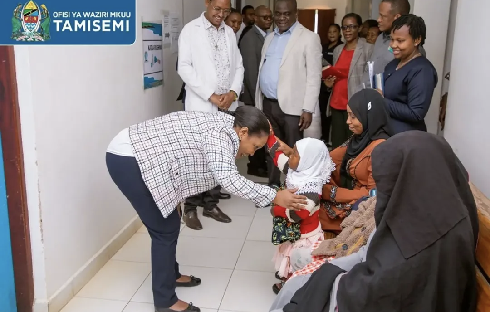
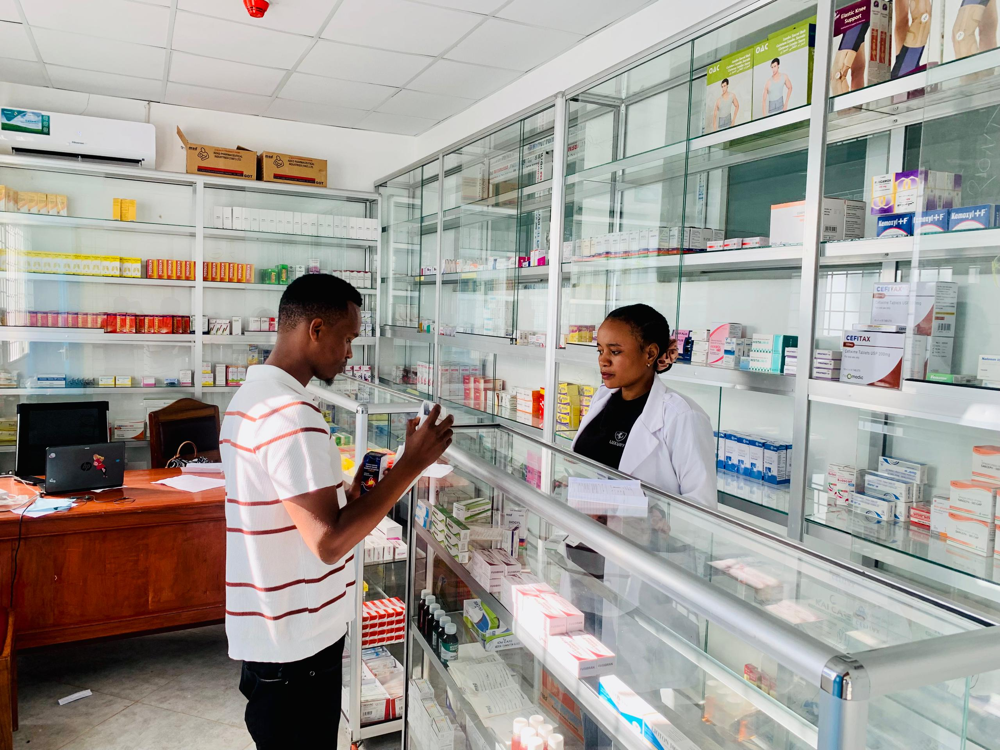
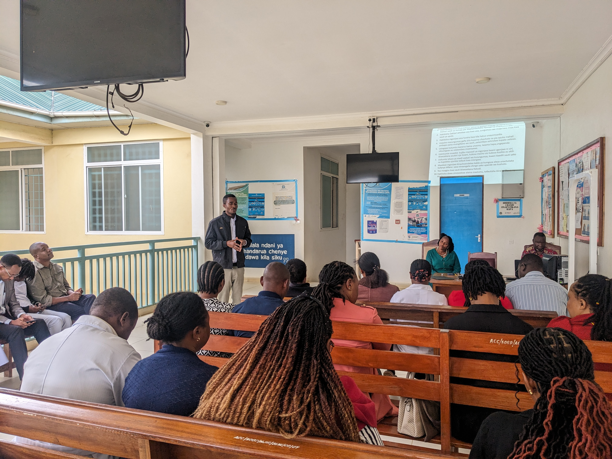
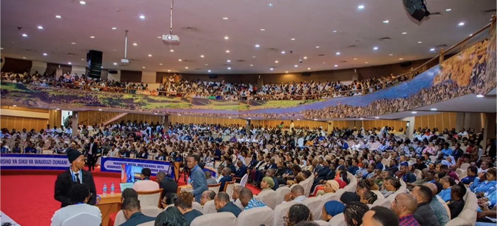

Arrival of Deputy Permanent Secretary, Prime Minister's Office, Hon. Prof. Tumaini Nagu at Arusha City Hospital
This is one of the crucial visit done by Deputy Permanent Secretary, Prime Minister's Office, Hon. Prof. Tumaini Nagu at Arusha City Hospital as an effort to make sure that several important strategies for ensuring the better health services are provided by health facilities in Arusha City Council. The visit went well including different positive recommendations for further advanced health services delivery mode of conduct
In Tanzania, the Prime Minister's Office coordinates multi-sectoral public health initiatives through its One Health Section, focusing on cross-cutting health threats, zoonotic diseases, and antimicrobial resistance via frameworks like the National One Health Strategic Plan.
Afya yako, Mtaji wako
Core Health Responsibilities of the Prime Minister's Office. One Health Coordination: Leads cross-sector collaboration across human, animal, wildlife, and environmental health.Strategic Planning: Oversees the multi-year One Health strategic framework to tackle public health emergencies and zoonotic threats.Policy Oversight: Aligns national disaster preparedness, food safety, and environmental health initiatives across ministries

NHIF Training at Arusha City Hospital Meeting Hall
This is a Training conducted by the Experts from National Health Insurance Fund (NHIF) aimed at improving service delivery in relationship to NHIF guidelines. The training seminar went well under the high cooperation to the all participants
Tanzania’s National Health Insurance Fund (NHIF) covers medical services at over 7,700 accredited public and private hospitals, health centers, and dispensaries. The benefit package includes outpatient care, inpatient admission, generic medicines, diagnostic tests, major and minor surgeries, and specialized services like ICU and CT scans.
Bima ya Afya kwa Wote, Jiunge Sasa!
Arusha City Hospital with medical insurance companies in order to cover all potential expenses. These are partnership designed to provide patients with top-notch care at little to no cost-sharing expenses. This insurance policy is categorized into different medical requirements such as: Inpatient Care: Includes hospital admission, procedures, and specialist treatments.
This ensures that patients have access to necessary care without incurring considerable expenses. Outpatient Services: Consultations, diagnostic testing, and basic operations that don't require an admission. Maternity Services: Provides early pregnancy, delivery, as well as and postnatal services to pregnant mothers and babies. Emergency services offer immediate medical care for severe medical issues, which is essential to stabilizing patients while preventing potential complications

Hospital Shop Service at Arusha City Hospital
This is a Medical Hospital Shop aimed at improving Pharmacy services provided to the patients who attend for several medical services at Arusha City Hospital. All the important medical items are well available in this Hospital facility
Clinical medical stores handle the safe storage, tracking, and distribution of drugs and surgical items, while retail shops provide comfort items, snacks, and personal care essentials.Clinical Hospital StoresInventory Control: Tracks medical consumables, expensive surgical products, and pharmaceuticals using digital audit trails.Stock Zones: Divides storage by environmental controls (like cold storage for vaccines) and keeps items off the floor on racks or shelves.Supply Chain: Links procurement directly to hospital billing and department needs to prevent shortages or revenue loss
Healing starts with the right care
The hospital procurement process is fundamentally the steps healthcare organisations take to get the medical equipment, product, or service that it needs. Encompassing the entire process from investment request to final purchase. The procurement attempts to improve processes, define needs, enable quality assurance, cut costs, and build relationships with suppliers and partners.

CME Training on Medical services for the Blind People in Arusha City Hospital
This is a Continuous Medical Education (CME) Training on Medical Service for the blind people by participating the all Arusha City Hospital staffs. The training went fine by participating the Blind people medical treatments specialists with Social Welfare Officers
Providing effective health instruction and clinical care for blind or visually impaired individuals requires clear verbal communication, accessible document formats, and respectful physical guidance protocols. Healthcare providers should adapt their practices to ensure equal access, autonomy, and comprehension
See the world, save your sight
Always identify yourself: State your name, your job title, and the reason for your visit upon entering the room, and announce when you are leaving.Speak directly to the patient: Address the individual rather than talking through an accompanying family member or caregiver.Provide clear descriptions: Explain what medical procedures you will be performing before you touch the patient or start an exam.Use precise directions: Avoid vague terms like "over there"; instead, use clock-face references or directional cues like "to your right" or "straight

Happy World Nursing Day Celebration on 12 May, 2026
It is the World Nursing Day Anniversary Meeting held at Arusha International Conference Centre (AICC) opened by Dr. Toba Nguvila comprised of several Nurses around Tanzania as a part of Nursing activities recognition in making sure that good health services are provided to the community. As Arusha City Hospital was among of the team attended the Celebration
celebrated annually around May 12 as part of National Nurses Week (May 6–12), coordinated heavily by the Tanzania Nurses Association (TANNA) alongside institutions like MUHAS. Celebrations feature scientific conferences, community medical outreach, and public health education.
Our Nurses. Our Future. Empowered Nurses Save Lives
Scientific Conferences: Annual professional gatherings—such as TANNA's scientific meetings—involve clinical presentations, policy discussions, and leadership training.Free Public Health Services: Nurses provide free medical checks, including blood pressure screening, diabetes testing, eye exams, and cervical cancer screenings for local communities.Community Outreach: Events often involve local tourism activities, public marches in designated T-shirts, and social gatherings like the Nyama Choma Festival to foster solidarity among healthcare workers.

Prime Minister's Office Training seminar on Electronic Information System (PD-MIS) towards People with Special Needs to the Regional and District Focal People in Arusha
This was a training seminar conducted by the Prime Minister's Office focused on sharing knowledge of using Electronic Information System (PD-MIS) towards the People with Special Needs attended by several Regional and District focal people as our very own Social Welfare Officer Miss Renatha Tesha was one of the participant. The seminar went nice for improvements of social services in the community
In Tanzania, the Prime Minister's Office coordinates multi-sectoral public health initiatives through its One Health Section, focusing on cross-cutting health threats, zoonotic diseases, and antimicrobial resistance via frameworks like the National One Health Strategic Plan.
Inclusion and Empowerment: Bridging Gaps, Creating Equal Opportunities
The Persons with Disability Management Information System (PD-MIS) training seminars, conducted by Tanzania's Prime Minister's Office (Labour, Youth, Employment and Persons with Disability), target regional and municipal social welfare and ICT officers. The digital repository streamlines accurate data collection on citizens with special needs starting from the village and street levels

Yearly Best Employee Recognitions on Workers Day 2026 (MEI MOSI)
We are so grateful to have our very own Yearly Best Employees as Arusha City Hospital team,Miss NIWAEL SUMARI (Our City Nursing Officer), Miss ESTHER PIUS (Our Nutrition Officer) and Mr. DENIS SINKALA (Our Anaesthetist) after getting the recognition prizes on Worker's Day held in Arusha City Council. Much congratulations to our beloved Colleagues for achievement
During the National Workers' Day (Mei Mosi) celebrations on May 1, 2026, healthcare workers across Tanzania were recognized for their outstanding service to the public. Centered around the national theme, "Decent Work is a Strong Pillar for Sustainable Development in the Implementation of the National Vision 2050," various regional and institutional bodies rewarded the country’s top healthcare personnel for their diligence, resilience, and professional excellence
"Kazi zenye Staha ni Nguzo Imara kwa Maendeleo Endelevu katika Utekelezaji wa Dira ya Taifa 2050
The Tanzania Health Summit (THS) honours Tanzania’s incredible healthcare workers! This year, we celebrate their dedication alongside the 13th Annual Tanzania Health Summit 2026. It’s time to shine a spotlight on these healthcare heroes and the amazing service they provide! This marks our third round of the National Healthcare Awards, further reinforcing our commitment to acknowledging and appreciating the outstanding contributions of our healthcare professionals

Social Welfare Seminar to Secondary School Students in Arusha City Council
It is one of the interesting strategies done by our very own Social Welfare Officers with the aim of improving knowledge on social welfare issues in the society by considering on several age groups as well as eradicating negative treatments against human rights in the society.
Social welfare in schools encompasses support systems like school feeding programs, mental health counseling, nursing care, and social work. These services protect children from violence, reduce dropouts, and improve academic success by tending to students' basic physical, emotional, and social needs.
Support a friend, build a community
Nutritional Support: Providing school meals or hot lunches to boost health and focus.Child Protection: Addressing abuse, neglect, and violence through trained social workers.Mental Health Services: Offering counseling, therapy, and emotional support spaces.Attendance Tracking: Reducing chronic absenteeism and preventing school dropouts.

Hospital Board Meeting at Arusha City Hospital Venue
It was an interesting Meeting between the Heads of Arusha City Hospital and Hospital Board Committee with the aim of Health services improvements as well as discussion on several strategies in making sure the best health services. The discussion went well for the best outputs among the meeting paticipants for further implementation
a governing group responsible for the strategic direction, financial health, and quality oversight of a healthcare facility. It supervises the chief executive officer, ensures patient safety, and aligns the hospital's services with community needs.
Healing with a human touch
Strategic Planning: Set long-term goals and define the mission, vision, and values.Financial Oversight: Approve budgets, monitor debt, and review capital expenses.Leadership Management: Hire, evaluate, and supervise the hospital CEO.Quality & Safety: Track patient outcomes and ensure high standards of care.Compliance: Make sure the hospital follows all local laws and rules.

Arrival of Engutoto Ward Councilor, Hon Hamza Njiku in Arusha City Hospital
It was a nice moment after the Arrival of Engutoto Ward Councilor, Hon Hamza Njiku as a part of listening and making several problem solving approaches facing the community as well as making strategies for improving health services in Arusha City Hospital. Discussion went well by participating our Staffs at Arusha City Hospital
A ward councilor acts as a bridge between the local community and the municipal council. In healthcare, they help lead the Ward Development Committee, advocate for local health facility needs, support primary care programs like health posts and dispensaries, and connect residents to health services.
Real healthcare leadership for our ward
Representation: Voice local health needs and community concerns at council meetings.Governance: Help manage local health committees for dispensaries and health centers.Resource Allocation: Push for fair funding, medicine supplies, and proper staff housing in the ward.Community Mobilization: Encourage participation in public health campaigns, sanitation drives, and health insurance programs like community health

Continuing Medical Education (CME) Session by Muriet Health Center Medical Officer In Charge (MoI) Dr. Noel at Arusha City Hospital
This was a nice Continuing Medical Education Session carried out by Muriet Health Center Medical Officer In Charge (MoI) Dr. Noel to the all Arusha City Hospital staffs as a part of improving Health services provision to the patients who attend for several medical treatments
A medical seminar on stress in health focuses on recognizing the physical and mental impacts of pressure, preventing burnout, and teaching practical coping strategies for students and medical staff. These programs improve mental health literacy, encourage early intervention, and build professional resilience
Inhale peace, exhale stress
Signs of Burnout: Spotting early distress signals before they turn into major health problems.Coping Tools: Practicing mindfulness, breathing exercises, and relaxation techniques.Support Networks: Creating peer support systems and knowing when to ask for expert help

Emergency Care Training for Mothers and Infants at Arusha City Hospital
This is an Emergency Training for Mothers and Infants conducted at Arusha City Hospital aimed at improving capacity among the Health providers / experts towards the patients who attend at Arusha City Hospital against Maternal death na d ensuring the better health during Birth services
Emergency care training for mothers and infants focuses on life-saving clinical interventions known as EmONC (Emergency Obstetric and Newborn Care), covering newborn resuscitation, management of severe bleeding, and treatment of hypertensive crises
Be her hero, be his shield: Learn infant first aid
Antibiotics: Administering parenteral doses to treat maternal and newborn infections.Uterotonics: Using drugs like oxytocin for the active management of labor and prevention of postpartum hemorrhage.Anticonvulsants: Giving magnesium sulfate to manage severe pre-eclampsia and eclampsia.Placental Removal: Performing manual extraction of a retained placenta.Assisted Delivery: Executing vacuum extraction or safe assisted vaginal delivery.
Yearly Staffs Get Together Party at Arusha City Hospital
This is a Yearly periodic event prepared by Social Committee at Arusha City Hospital aimed at improving Unity, Love and Caring spirit to the patients. The event comprising all Staffs at Arusha City Hospital as the One family
A workers' get-together party in healthcare builds team morale, reduces job burnout, and strengthens cross-departmental communication outside of stressful clinical environments. These social gatherings typically feature staff recognition awards, informal peer networking, catered meals, and wellness activities
Stronger Together, Healing Forever
Morale Boosting: Reconnects staff after long, demanding shifts and high-stress cycles.Burnout Reduction: Lowers emotional exhaustion by fostering a supportive community culture.Interprofessional Trust: Improves non-clinical bonding between nurses, doctors, technicians, and administrative personnel.

Arusha City General Cleanliness Campaign at Arusha City Hospital
This was the one of Campaign in the whole Arusha City areas, which was conducted by several development stakeholders under the supervision by Arusha City Council Commisioner Hon. Joseph Mkude in making sure that Arusha City is clean in general.
Stopping Germ Spread: Regular cleaning removes dust, dirt, and harmful microbes from floors, walls, and furniture.High-Touch Surfaces: Areas like bed rails, doorknobs, and IV poles get touched often and need constant disinfection to block bacteria and viruses.Fighting Drug Resistance: Proper sanitation stops stubborn germs like MRSA and C. difficile from growing and spreading in medical spaces.
Wash and sweep: Keep the germs asleep
Better Health Outcomes: Clean spaces lower the chance of patients getting sick with new hospital-acquired infections.Safe Environments: Clean rooms help patients heal faster and give visitors and workers peace of mind.

Arusha City Council District Commissioner arrival at Arusha City Hospital
One of the interesting arrival of our Leader in making sure that the health services are well offered to the community. Our District Commissioner Hon. Joseph Mkude in the inspection of OPD Complex project around our hospital as the one of effort in health improvement
District Commissioners contribute to healthcare by mobilizing communities for public health schemes, overseeing local health facility development, and supervising resource distribution
Good leadeship for the better healthcare in the society
Tanzanian government has continued to strengthen maternal and child healthcare services at ward, district, regional and national levels through sustained investment in health infrastructure, procurement of medical equipment and capacity building for healthcare workers, including doctors and nurses.

On-going OPD Complex Construction at Arusha City Hospital
Our own Out Patient Department Complex Construction is on-progress under the highest level of expertise at Arusha City Hospital. Our expectation is very interesting on this beautiful kind of facility.
Constructing outpatient services in a hospital is essential because it improves patient convenience, reduces operational costs, and optimizes inpatient capacity. These facilities allow patients to receive same-day care, consultations, and minor treatments without an overnight stay
Infrastructures improvement leads us to the better health services provision
Outpatient care is a significant function of hospitals and healthcare facilities. As a means of increasing the budgetary spread, hospitals are narrowing their focus on outpatient care due to its rise in demand. Additionally, these units within hospitals are typically less expensive to construct and operate.

NCBA Bank arrival at Arusha City Hospital as a Health Stakeholder
It was a nice moment to welcome NCBA Bank Staffs at Arusha City Hospital as a sign of being one of our health stakeholder. An arrival was accompanied with Trees planting around Arusha City Hospital environment
Health microinsurance, specialized hospital credit, and health savings accounts, helping communities manage medical costs and expand universal health coverage.
Economic Integration leads towards the better Health status in the community
The achievement of national health objectives is eventually achieved through the selection of an adequate and efficient combination of method of financing, organizational delivery structure for health services and payment approach for health providers. In addition, other structural elements contribute to the achievement of health objectives, such as the regulatory framework and programmes of public education.

President Dr. Samia's Specialist Doctors Medical Camp at Arusha City Hospital
These is a Medical Camp coordinated under the supervision of President Dr. Samia Suluhu Hassan's Medical Specialists with the aim of capacity building across the Health experts in Tanzania. The Camp went fine around Arusha City Hospital.
The Samia Suluhu medical camps (often part of the Mama Samia or Jakaya Kikwete Cardiac Institute (JKCI) Samia Outreach campaigns) are nationwide free specialized medical outreach programs initiated by President Dr. Samia Suluhu Hassan to bring specialist healthcare close to citizens
Good health improvement for the better community prosperity
Free Specialized Care: Specialist doctors from national referral hospitals provide free consultations, screenings, and treatments.Targeted Conditions: Focuses heavily on non-communicable diseases like cardiovascular complications (via JKCI), hypertension, elevated blood sugar, and cancer screenings.Digital Tracking: Utilizes digital patient management systems to record treatments and secure proper follow-up care.Nationwide Scope: The broader initiative targets all districts and local councils across Tanzania's regions

Arusha Regional Commisioner (Hon. Paul Makonda) in the arrival as the Inspection of On-going OPD Complex Construction
This is one of the crucial visit done by Arusha Regional Commisioner (Hon. Paul Makonda) at Arusha City Hospital as an effort to make sure that several important strategies for ensuring the better health services are provided by health facilities in Arusha City Council. The visit went well including different positive recommendations for further advanced health services delivery mode of conduct
In Tanzania, Arusha Regional Commisioner coordinates multi-sectoral public health initiatives through its One Health Section, focusing on cross-cutting health threats, zoonotic diseases, and antimicrobial resistance via frameworks like the National One Health Strategic Plan.
Good Health for the better community improvement
Core Health Responsibilities of the Arusha Regional Commisioner. One Health Coordination: Leads cross-sector collaboration across human, animal, wildlife, and environmental health.Strategic Planning: Oversees the multi-year One Health strategic framework to tackle public health emergencies and zoonotic threats.Policy Oversight: Aligns national disaster preparedness, food safety, and environmental health initiatives across ministries

60 Years Union Celebration (TANZANIA) at Arusha City Hospital
These include 60 Years Union Celebration of Tanganyika and Zanzibar ( TANZANIA ) with the arrival of several Political, institutional leaders and health issues stakeholders under the supervision of Arusha City District Commissioner Hon. Felician Mtahengera as the delegation of Arusha Regional Commissioner. Visitors participated in several health issues including Blood donation, health consultationa dn environmental keeping (Trees planting and general cleanliness) around Arusha City Hospital surrounding
During the 60th anniversary of the Tanzania Union in April 2024, the government highlighted major health sector milestones, specifically the construction of over 9,000 health facilities, nationwide council-level coverage, and resilience against epidemics.
Jamhuri ya Muungano wa Tanzania, Kazi iendelee
Health Facilities: More than 9,000 health centers and dispensaries constructed across the mainland and Zanzibar.Access: Every local council now has operational health facilities and dispensaries providing basic medical services.National Reach: Improved grassroots service delivery reducing the distance citizens travel to access care

Annual Departmental Budget Planning at Arusha City Hospital
This was an Annual Departmental Budget Planning for Arusha City Hospital where different departments at Arusha City Hospital met and discussed on several upcoming issues on departmental budget planning
Annual departmental budget planning in healthcare is the systematic process of forecasting revenues, estimating costs, and allocating financial resources. Its core components include operational expenses, capital investments, and revenue projections
Good planning for the better Healthcare facilities improvements
Healthcare budgeting, like budgeting in other industries, plans and distributes financial resources over a set timeframe, often a month, quarter or year. The budgeting process includes estimating revenue and expenses and setting financial objectives that align with the organization’s overall strategic goals. Once completed, the budget acts as a road map, guiding the organization’s financial undertakings and informing decisions. Effective budgets in healthcare focus on more than just numbers, as funding decisions must empower healthcare providers to deliver top-quality care to patients while preserving financial viability.

Food Demonstration at RCH department in Arusha City Hospital. Date 24/01/2024
This was a Food demonstration conducted by Nutrition department which aimed at demonstrating on various kinds o Foods better for Children especially for good health. The demonstration was carried out very well by our very own ood specialists at Arusha City Hospital.
Nutrition education in healthcare involves training providers to deliver dietary counseling, addressing chronic disease prevention, and integrating food-as-medicine concepts into clinical workflows. Despite its critical role, formal training is often limited, with surveys indicating that up to 75% of medical schools lack dedicated required nutrition coursework.
Eat right, heal bright
Preventative Care: Lowering risks for type 2 diabetes, high cholesterol, and hypertension through targeted dietary intervention.Patient-Centered Counseling: Using motivational interviewing and assessing cultural practices, food insecurity, and individual social determinants of health.Interdisciplinary Collaboration: Partnering directly with clinical dietitians and nutrition specialists for specialized therapies

Reproductive and Child Health Clinic at Arusha City Hospital
This is a Reproductive and Child Health Clinic ( RCH ) service which is provided on Everyday from 08:00 A.M to 03:30 P.M by our very owned Health Clinic specialists n making sure that the Health status of children is on the good condition. Including the consultation services from the health experts for the best development of the children in the society
A hospital Reproductive and Child Health (RCH) clinic provides essential medical care and education for mothers, newborns, and young children. Key services include antenatal care, child immunization, and family planning
Safe motherhood is our shared goal
Antenatal Care (ANC): Regular checkups, ultrasound scans, and health tracking starting before week 20 of pregnancy.Safe Delivery: Labor and childbirth support managed by skilled nurses, midwives, and doctors, including emergency C-sections if needed.Postnatal Care (PNC): Post-birth checkups for mothers and newborns to monitor recovery and healing.Prevention of Mother-to-Child Transmission (PMTCT): Testing, counseling, and medication management for HIV and sexually transmitted infections